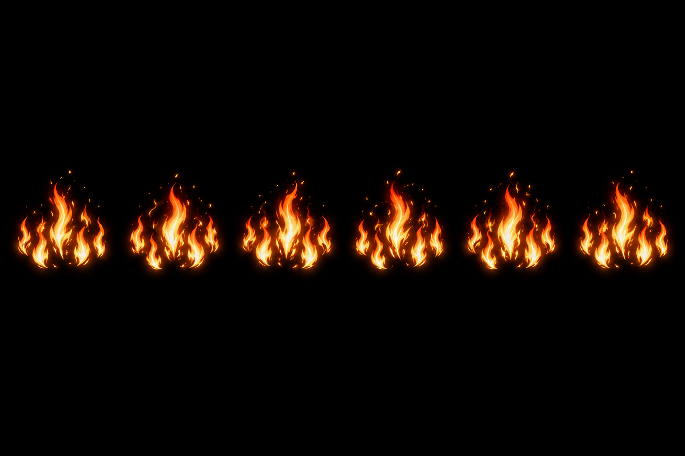
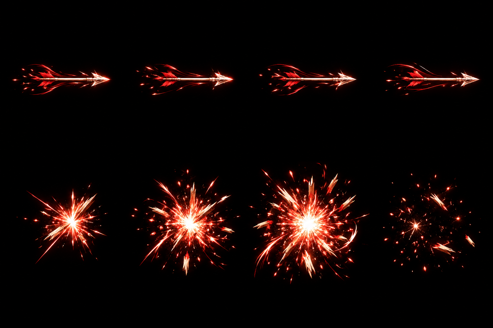
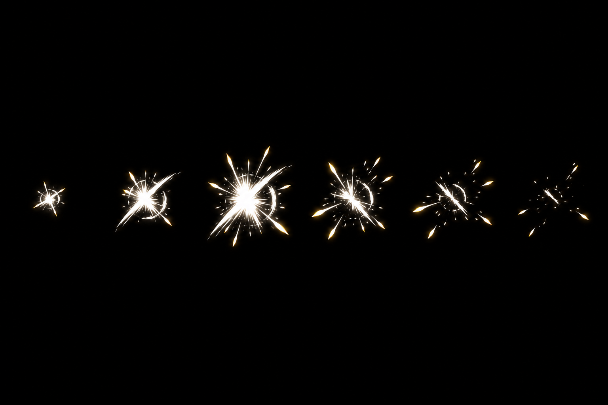
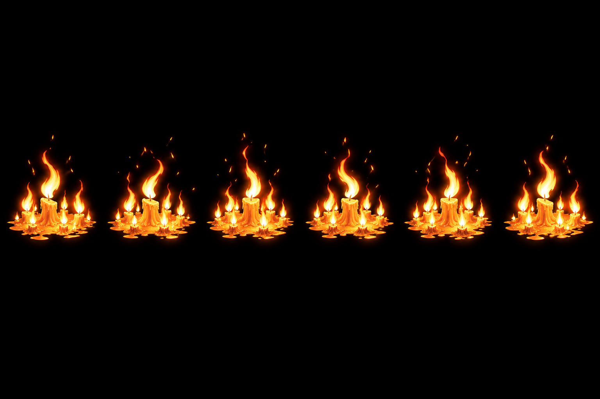

DRAFT · Aceite visual pendente. 3 candidatas + 1 versão retida. Fontes geradas por imagegen; sem integração.
As amostras abaixo usam a grade nominal em CSS: servem para revisão preliminar. Deslocamentos e cortes indicam necessidade de normalização, não atlas final. O recorte nominal da F13 corta parte do pico.

Somente chamas. Revisar silhueta, distribuição no oval e retorno do loop.

Voo acima; impacto abaixo. Revisar leitura hostil e tamanho do impacto.

Pico maior que o solicitado: requer normalização. Revisar linguagem visual e dissipação.
